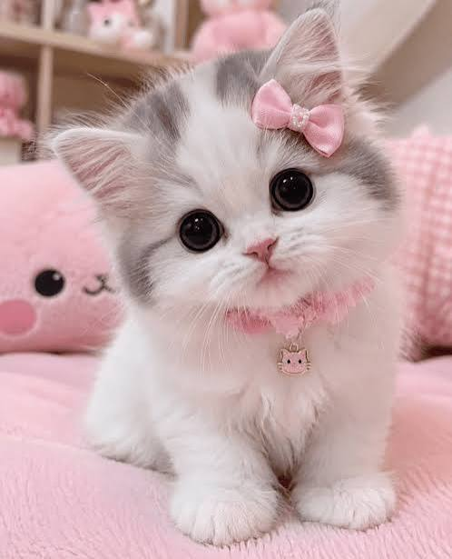
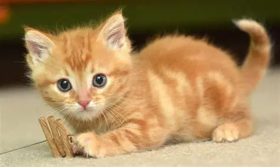

The cat (Felis catus), also called domestic cat and house cat, is a small domesticated carnivorous mammal. It is a member of Felidae, the family of mammals in the order Carnivora also colloquially referred to as cats. An obligate carnivore requiring a predominantly meat-based diet, it has retractable claws adapted to killing small prey species such as mice and rats. It has a strong, flexible body, quick reflexes, and sharp teeth, and its night vision and sense of smell are well developed. It is a social species, but a solitary hunter and a crepuscular predator. Cat communication includes meowing, purring, trilling, hissing, growling, grunting, body language, and scent marking. It can hear sounds too faint or too high in frequency for human ears, such as those made by small mammals. It secretes and perceives pheromones. Cat intelligence is evident in its ability to adapt, learn through observation, and solve problems. The domestic cat is the only domesticated species of the family Felidae.


To read the details of other type of cats click on cat breeds